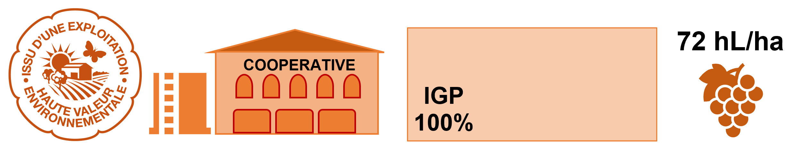
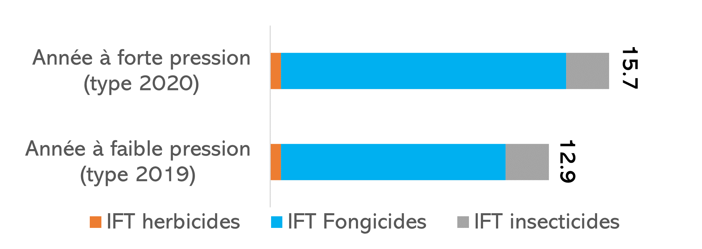
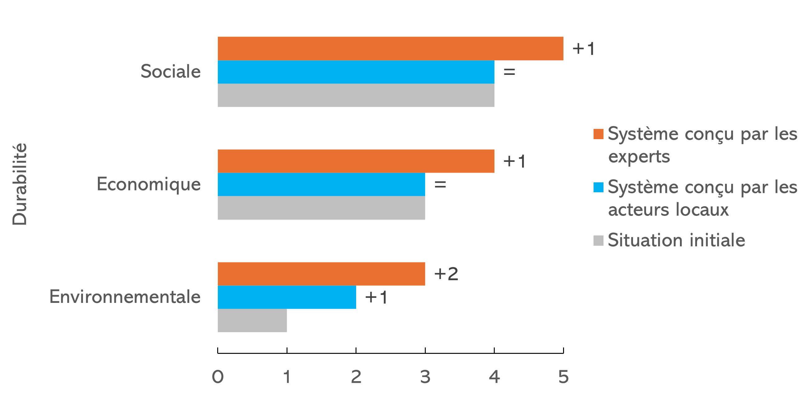

Exploitation HVE en coopérative 100% IGP
L’exploitation est labellisée HVE et livre son raisin à la cave coopérative. Sa surface est d’une vingtaine d’hectares avec un vignoble en IGP. Le rendement moyen est de 72 hL/ha.

L’exploitation mobilise environ 2 équivalents temps plein à l’année, dispose d’une voûte pneumatique pour les traitements. Elle n’est pas équipée en intercep pour le désherbage mécanique.
Sa capacité d’investissement est d’environ 15 000 € par an.
La situation initiale de l’exploitation
Les pratiques actuelles
La protection phytosanitaire
L’exploitation est équipée d’une voûte pneumatique et pratique le sous-dosage pour les traitements en début de saison lorsqu’il y a peu de végétation à protéger.
Des produits insecticides à double cible sont appliqués pour gérer les cicadelles et les vers de la grappe.
L’IFT varie de 12.9 en année à faible pression à 15.7 en année à forte pression Figure 1

Gestion de l’herbe
Les inter-rangs sont labourés, environ 4 passages par an dont 1 labour d’automne. Sur le rang, l’exploitation a recours au désherbage chimique, avec 2 passages de glyphosate et 1 anti-germinatif.
Évaluation de la durabilité initiale
L’évaluation de la durabilité de la stratégie est réalisée avec l’outil DEXi PM Vigne. DEXiPM Vigne note de 0 à 5 la durabilité des exploitations agricoles selon les trois piliers : économique, sociale et environnementale.
La situation initiale du type “Exploitation viticole HVE coopérative 100% IGP” est peu durable sur le plan environnemental (1/5, voir Figure 3). La durabilité économique est évaluée comme moyenne et la durabilité sociale comme élevée. La stratégie initiale est identique à l’exploitation en coopérative mixte : utilisation élevée d’herbicides et de labour et utilisation moyenne de fongicides et d’insecticides.
Quelles évolutions des pratiques ?
Les stratégies co-construites en atelier
Lors d’ateliers participatifs, des stratégies combinant différents leviers sur l’exploitation ont été proposées par un groupe d’experts (DRAAF, Syndicat AOP, Chambre Agriculture, Agence de l’Eau, chercheurs) et deux groupes de viticulteurs (acteurs locaux). Une sélection des stratégies les plus ambitieuses proposées (Figure 2) ont été retenues pour évaluation avec DEXi PM vigne.

Évolution de la durabilité
La stratégie proposée lors de l’atelier d’experts améliore l’évaluation de la durabilité environnementale de 1/5 à 3/5 (Figure 3). La durabilité économique est améliorée d’une classe passant de 3/5 à 4/5, également grâce au choix du passage sous label AB augmentant le prix de vente. La durabilité sociale augmente d’une classe en passant de 4/5 à 5/5.
Pour les acteurs locaux l’ensemble des notes est amélioré par rapport à la situation initiale. L’augmentation de la durabilité environnementale est due notamment à la diminution des indices IFT globaux des pesticides grâce à la plantation de variétés résistantes (baisse des fongicides) et en rejoignant un GDON (baisse des insecticides obligatoires pour la lutte contre la flavescence dorée). La durabilité économique (4/5) et la durabilité sociale (5/5) s’améliorent d’une classe par rapport à la situation initiale..
